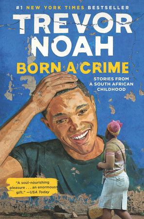

FEARLESS
The most interesting part in Born in crime is Trevor mother,
she is a fearless Woman she understood that having a child with
a white is a crime, that could take her to jail for four years
but she still broke those rules. She was willing to raise her
Son alone.
We are told that when she was young she dint want to live in Soweto
and she Ran away to live in downtown Johannesburg, and it was illegal.
We are also told that there were no white collar jobs for blacks they only
had options to work at a farm or to work as maids but Trevor's mother chose to
take a secretarial course because she despised working in a factory and she
was a bad cook.
RELIGION
Trevor and his mother cope with poverty and fear of violence surrounding them
by being religious Trevor's mother was a devout Christian; she took the family to
three churches every Sunday, which took all day, the reasons they went to different
churches was because each church had something to offer.
She seems to believe that the more church she goes to, the more blessings she will
get and the more likely she will be to have her prayers answered.Whenever their car could
not start they used public minibuses. She dedicates countless hours to pray in order to gain
the sense of control and certainty she lacks.
In church they used to be told to pray to Jesus to save them but for them they prayed so that
Jesus would save from the whites.Trevor's mother restricted her son from watching unreligious videos
she only allowed her to listen to gospel stuff.
RACISM


Trevor was born as a colored child a lot of his life and his mother’s is defined by
negative attitudes about their skin color whenever she went to Soweto those around would
call her a prostitute because she had a white kid.
There is racism where Trevor's family thought that when he prays, Jesus will listen to
his prayers more. His grandmother gave him as much food as he wanted and never disciplined
him because she didn’t know how to hit a white child, and he becomes famous in Soweto for
his light skin.We can also see how Noah was always indoors because if the police saw him they
would take him to orphanage and arrest his mother.
There was racism when they wanted to go to the park they would always go with a friend who
was white and Trevor's mum would act as the maid to avoid attention and the authority. Also when
they went to the park with trevor's father he would walk far from them because the whites and black
were not allowed to socialize.
There was also racism where whites, colored and blacks lived in different places and it was illegal
to live wherewhites were unless you were working .There were also no white color jobs for blacks.
LOVE

Trevor and his mother, Patricia, who is fearless grew up together, just the two of them, Noah long
considers himself and his mother a team. Patricia showed Trevor that many rules were based on nonsense
and that he must be careful about breaking them. And when he did break them which he did all the time
she punished him harshly. His mother uses pain to show love for example when Trevor is naughty his mum
disciplines him then later she smile to him
Although Trevor was inseparable from his mother for much of his childhood, they also had a love-hate
relationship because Trevor is disobedient and his mother is strict. Like when Noah failed exams her
mum would strictly ground him for a week from watching television. And Noah would be so rude to her. But later they would joke and laugh together and talk as adults.